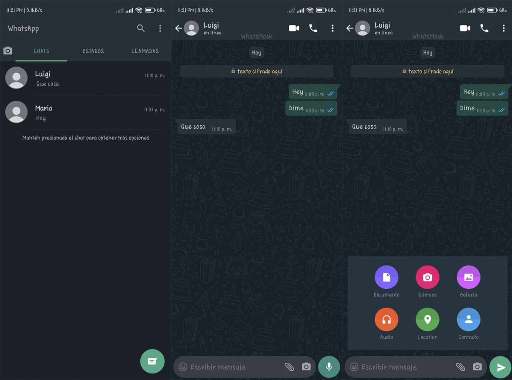

Inicia un chat:
Pulsa en
o
y busca un contacto para comenzar. Escribe un mensaje en el campo de texto. Para enviar fotos o videos, pulsa
o
junto al campo de texto. Elige
Cámara
para tomar una foto o un video, o bien
Galería
o
Fotos
y
videos
para seleccionar una foto o un video de tu teléfono. Luego, pulsa
o
.